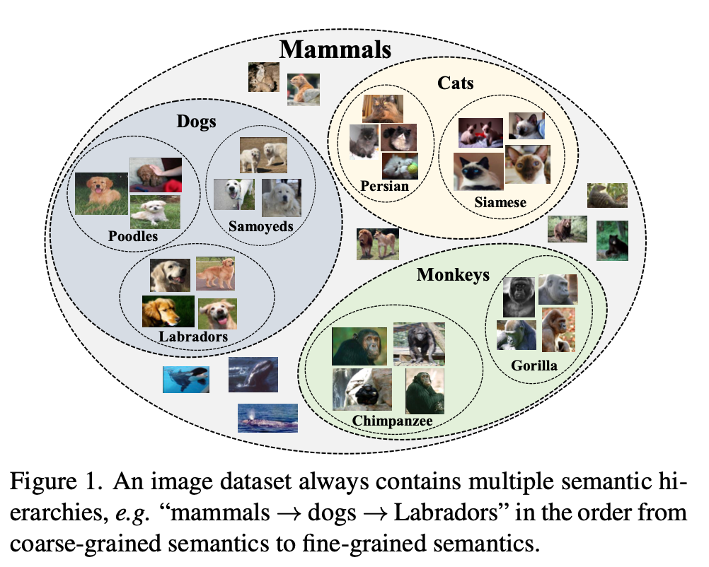
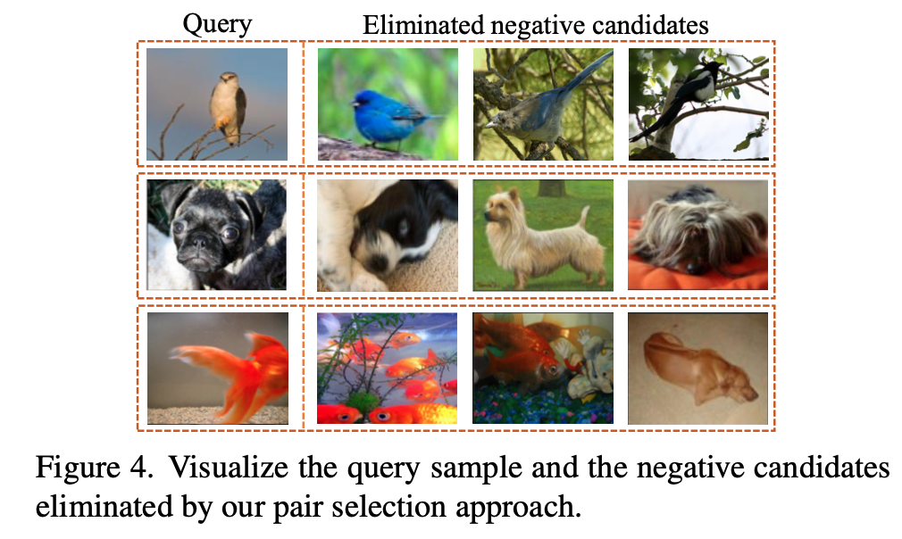

Contrastive Learning (5) — Contrastive Learning with Clustering
So far, we have discussed Contrastive Learning(CL) frameworks such as InstDisc, SimCLR, MoCo, SimSiam, BYOL, which still the mainstream framework in the lastest CL works. Instead of frameworks, CL still has many also problems or weakness. This chapter will discribe one of it weakness: lacking semantic presententation due to instance discrimination pretext task, i.e. a model good at discriminating instances will lose higher level information like their clusters. Therefore, let’s see how researchers integrate clustering methods into Contrastive Learning. Moreover, this chapter and the next will be like a short survey of the lastest CL papers, which means I will not write every paper clearly and discuss every techniques. We will focus on papers’ motivation, main method and try to give my own insights.
SWaV
To be improved.
PCL: PROTOTYPICAL CONTRASTIVE LEARNING
Paper: Li J, Zhou P, Xiong C, et al. Prototypical contrastive learning of unsupervised representations[J]. arXiv preprint arXiv:2005.04966, 2020.
Arxiv: https://arxiv.org/abs/2005.04966
This paper proposes 2 drawbacks of previous contrastive learning framework.
The task of instance discrimination could be solved by exploiting low-level image differences, thus the learned embeddings do not necessarily capture high-level semantics. This is supported by the fact thatthe accuracy of instance classification often rapidly rises to a high level (>90% within 10 epochs) and further training gives limited informative signals. A recent study also shows that better performance of instance discrimination could worsen the performance on downstream tasks.
- cannot capture the semantic structure of data, since each negative sample shares similar semantics by InfoNCE.
Framework


Figure 2 and pseudo-code can help understand PCL:
- use features from momentum encoder to do k-means to get prototypes/cluster centers and concentration(discuss later).
- Use ProtoNCE to update network, which ProtoNCE will use prototypes by the previous step.
- update momentum encoder like MoCo
ProtoNCE
\[\mathcal{L}_{\text {ProtoNCE }}=\sum_{i=1}^{n}-\left(\log \frac{\exp \left(v_{i} \cdot v_{i}^{\prime} / \tau\right)}{\sum_{j=0}^{r} \exp \left(v_{i} \cdot v_{j}^{\prime} / \tau\right)}+\frac{1}{M} \sum_{m=1}^{M} \log \frac{\exp \left(v_{i} \cdot c_{s}^{m} / \phi_{s}^{m}\right)}{\sum_{j=0}^{r} \exp \left(v_{i} \cdot c_{j}^{m} / \phi_{j}^{m}\right)}\right)\]
where \(c\) is cluster information. So this loss combines between Clusters info and Instances Info. \(M\) means that they will do k-means M times or M different k clusters, they proposed that M times k-means will have different propotype semantic structure from high semantice to low semantic.
Another different paramter is \(\phi\), where it always is a hyperparamter of \(\tau\). Here \(\phi\) is a dynamic paramter learning with training.
\[\phi=\frac{\sum_{z=1}^{Z}\left\|v_{z}^{\prime}-c\right\| 2}{Z \log (Z+\alpha)}\]
where \(α\) is a smooth parameter to ensure that small clusters do not have an overly-large \(\phi\). They normalize \(\phi\) for each set of prototypes \(C_m\) such that they have a mean of \(\tau\).
HCSC: Hierarchical Contrastive Selective Coding

This paper proposed that a large dataset contains multiple semantic, e.g. “mammals \(\to\) Dogs \(\to\) Labradors”, where this kind of hierarachical semantics do not be noticed in previous researches. Actucally, PCL does this like multiple times k-means. But this paper does more work on this.
Another novelty job is that they propose to select high-quality positive and negative pairs which confirms that they are true negative and positive samples.
For positive samples: select most similar prototype on each semantic hierarchy to build more abundant positive pairs.
For negative samples: use a Bernoulli sampling to determine if a sample is kept or discarded by their semantic correlation value.
### Hierarchical K-means

The difference between HCSC and PCL is that they iterate k-means in the clusters, where PCL do gobal k-means many times.
Sample selecting

For example, mammals will be a global semantic which be shown as a biggest green point. Then “dogs” will be “mammals” branch and be shown as a smaller green point, and “poodles” and “labradors” will be shown as the smallest green points. Every other different color points are those who are different with “Mammals”.
For (b), when selecting samples, positive pairs will be selected in all green points with different sizes to ensure they have different hierarchical semantic, e.g. not only the augs from themselves, but also “poodles”, “dogs”, “mammals” for a “labradors” image. And Negative pairs will be selected in different color points and sample them by a Bernoulli sampling (dicuss later).
selecting code
selecting example
